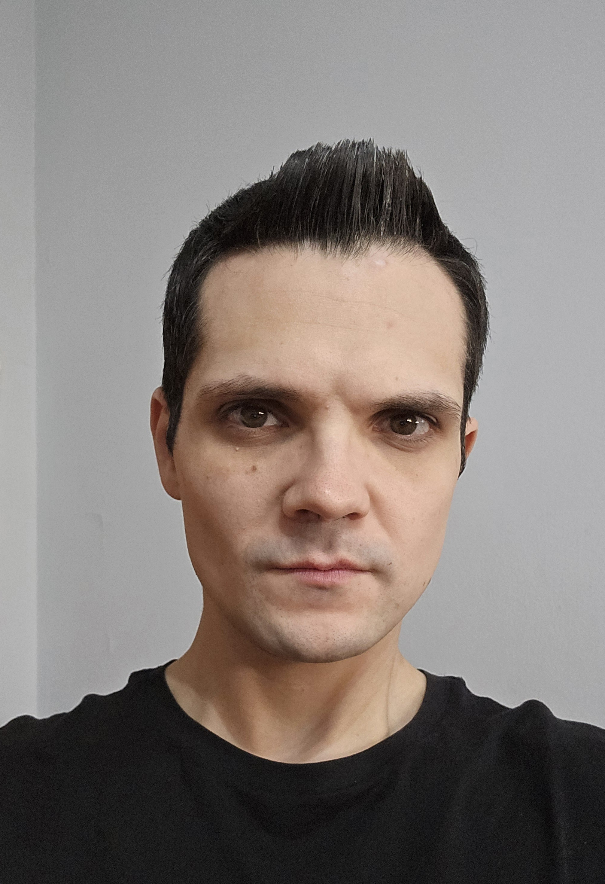

Márcio Augusto Teles dos Santos Almeida

Introduction
I'm a very persistent, proactive, dynamic and determined individual who
keeps trying to evolve his personal and professional skills in order to
be prepared to face any challenge, but I'm also someone who's always
available to helpout his fellow team members whenever they require some
assistance.
At the moment my main professional focus and interest lies in Embedded
Software Test Engineering and Full-Stack Web Development, with a huge
ambition and determination to work and grow in either of these fields.
Contacts
Phone number: (+351) 96 867 41 65
E-mail: maalmeida.5878gmail.com
Address: Vila Nova de Gaia, Porto, Portugal
Technical Skills
- Automotive embedded systems engineering
- Software requirements management
- Model detail design
- Development in embedded C
- Software unit test specification and scripting
Languages
- Portuguese (native)
- English (fluent)
- Japanese (Beginner)
Driver's License
Personal Interests
- Video/Board games
- Music
- Sports
- New technologies
- Japanese culture
Professional Experience
Software Test Engineer
Akkodis | July 2023 - July 2024
Performed test engineering for the Steering Angle Sensor (SAS) automotive
project in Bosch Braga, both for internal platforms as well as client
releases:
- Design the specification of unit tests
- Unit test script development in C using Cantata IDE
- Software versioning control via Tortoise SVN
- Task management done via Jira and Kanban
Embedded Software Engineer
ALTEN Portugal | February 2023 - July 2023
Thermotechnology project for Bosch Aveiro with the responsibility of working
in the HMI and Bootloader development of Renesas software and firmware:
- Perform model design with Enterprise Architect
-
Software coding performed in Visual Studio Code, while the build and
configuration is done using Conan profiles
- Development of unit tests in C++ with the GoogleTest framework
- Software versioning control via Git
Embedded Software Engineer
ALTEN Portugal | March 2022 - February 2023
Development of the Renesas bootloader project and test engineering of IVECO
software for Bosch Braga in the automotive field:
- Software detail design in IBM Rhapsody
-
Investigation, coding and configuration of multiple multiple ARM
Cortex A76 and R52 peripherals
- Software debugging with Lauterbach
- Creation of automated software unit tests with the ECU-tests tool
Middleware Coordinator
ALTEN Portugal | January 2021 - February 2022
Middleware coordination of ZF Friedrichshafen projects developed for several
automotive companies (BMW, Audi, Chrysler, Porsche...):
-
Creation, analysis, investigation and update of change requests,
jobs and releases in Clearquest (Clearcase)
- Error ticket analysis and investigation with the Omnitracker tool
- Requirement analysis and implementation in IBM Doors
- Project management performed using Agile methodology and Redmine
Embedded Software Engineer
ALTEN Portugal | November 2019 - December 2020
Software development of the Audi PPE automotive project for Continental,
based on AUTOSAR concepts and guidelines, by implementing a robust airbag
system which would provide a high level of safety to the vehicle's occupants:
-
Creation of software requirments based on system requirements for
later implementation
-
Model detail design done in IBM Rhapsody according to the
requirments and software architecure
-
Implementation in embedded C using Wind River IDE (Eclipse), with
code validation according to MISRA rules
- Automated unit tests with the Razorcat TESSY framework
- Software debugging in winIDEA
-
Hardware testing of ECU samples done in a test bench and with vector
CANoe
-
Project management performed using V-Model methodology, Jira and
Redmine
Education
Institute of Superior Engineering of Porto
Licentiate degree in Electrical and Computer Engineering - November 2017
- Analysis and simplification methods of electric circuits
- Basic knowledge in the field of Power Electronics
-
Analysis and development of software using the C programming
language
- Basic knowledge in the field of Digital Electronics
- Design and implementation of micro-controller based digital systems
- Project and analysis of continuous and discrete linear systems
- General knowledge about conventional electric machines
-
Analysis of dynamic systems and development of controllers according
to the classic control systems theory
- Signal processing and conditioning
- Design and implementation of medium/high complexity systems
- Design and development of PCBs